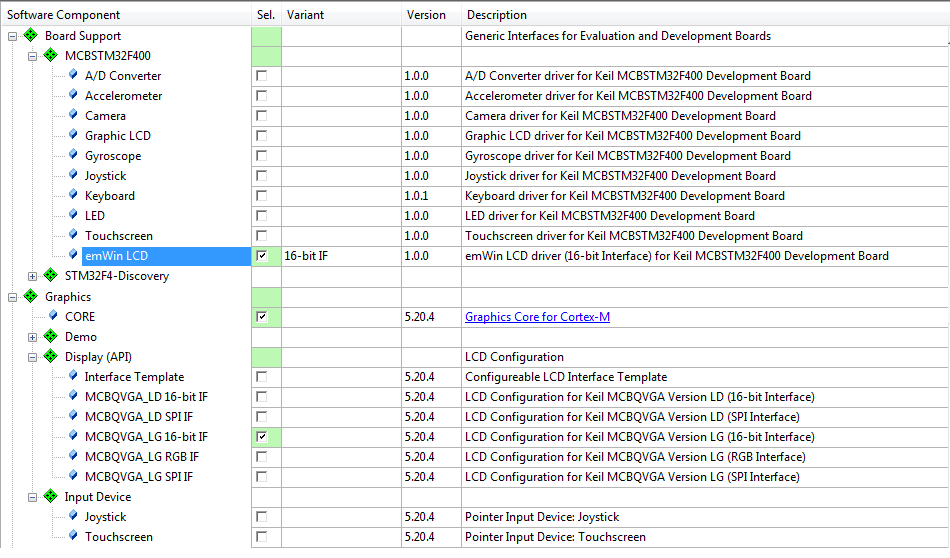
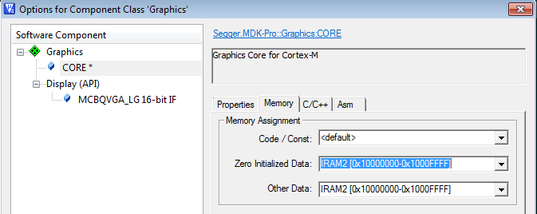
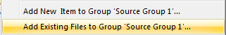

The steps to create a microcontroller application with Graphical User Interface are:
RTE Component Selection
Only a few steps are necessary to complete the RTE Component selection:
- From the Graphics Component:
- Select Graphics:CORE that provides the full emWin library.
- From the Display (API) select the preconfigured LCD Interface for your platform. If you are running on unsupported or custom hardware select the Interface Template
- Note
- The User and Reference Guide - 34.4.2 Customizing LCDConf.c describes how to customize the Interface Template.
- Optionally you can now also add a Pointer Input Device like Joystick or Touch if present on your hardware.
- Some preconfigured LCD interfaces also depend on a custom emWin LCD driver. Enable this from the Board Support.
- If Touch support is enabled you also need to choose a Touchscreen driver. This will be supplied in Board Support.

RTE Component Selection
Add and Configure the GUI Template
A User Code Template included in the Component provides a template for the GUI thread. To integrate this in your application follow these steps:
- Open the Add New Item ... dialog by right-clicking a source group in your project. Select the Template emWin GUI Thread for Single-Tasking Execution Model from the User Code Template section.
- To start the graphics component just call Init_GUIThread(); from your main task.
- The GUIThread requires some additional resources from your CMSIS-RTOS Kernel. Adjust your RTX_Conf_CM.c to provide following resources:
| Additional RTOS Kernel Resources |
Value |
| Threads | 1 |
| Threads with user-provided stack | 1 |
| Additional user-provided stack | 2048 Bytes |
Configure the Memory for the Component
The Graphics Component has some increased resource requirements. In most cases you will allocate external RAM (or some seperate RAM area on your device) for the GUI buffer.
- Open the GUIConf.c for editing. Set the GUI_NUMBYTES define to 0x8000. This will be sufficient for simple GUI dialogs. If you are increasing complexity of your GUI you also need to increase this buffer size.
- Run the Options for Component dialog from the context menu of the file GUIConf.c.
- In the Options for Component dialog select the RAM area you want to use for the Core Component. This will relocate the buffer in the selected area.

Options for Component Dialog
Add the GUIBuilder to the project.
Todo
Design a Dialog and Include in the Application.
- Create a new Framewin by clicking the icon on the toolbar. Adjust the properties. First you need to rename the Framewin object. In this example we call it "myDialog". The name of the root object will also be reflected in the generated source file name.
- Adjust the xSize and ySize to fit onto your display area. If the dialog is larger than your display it will be truncated.
- Add elements of your choice using the GUIBuilder toolbar. Here we add a button called "Button".

The GUIBuilder Utility
- Once you are done save the file (File-Save...). A new file called myDialog.c will be created.
- Add this file to a source group in your project using the context menu:

Source Group - Add Existing Files...
- Open GUI_SingleThread.c in the editor. Add #include "dialog.h" to the includes. In the GUIThread thread loop call CreatemyDialog(); You will also need to add an extern declaration WM_HWIN CreatemyDialog(void);
The Graphics Component is now completely integrated in your application.